단계적 엔진 검증과 데이터 축적을 통해
준궤도 발사 서비스로 확장하는 로드맵을 제시합니다.
At a Glance
Market Analysis
사운딩 로켓 및 준궤도 비행 시장은 연평균 9.6% 성장세를 보이고 있으며, 우주 부품 사전 검증, 미소중력 실험, 대기과학 관측 등 실제 우주 환경을 요구하는 수요가 급증하고 있습니다.
Source: Research and Markets, 2025
연평균 9.6% 성장하는 사운딩 로켓 시장. 우주 스타트업의 위성 부품 사전 테스트, 대학/연구소의 미소중력 실험, 대기과학 관측 등 실제 우주 환경을 요구하는 수요가 급증하고 있습니다.
2026년 우주항공청 예산 1.1조 원 시대, 민간 산업 생태계 조성에 1,738억 원이 배정되었습니다. 민간 연소시험시설 구축 및 나로우주센터 민간 개방이 추진됩니다.
코스닥 상장사 이노스페이스가 '세빛(SEBIT)'으로 준궤도 시장 수요를 증명했습니다. 하지만 세빛의 타겟은 고도 50km입니다.
계절(온도)에 따라 산화제 성능이 최대 54% 변동합니다. TUSI는 무거운 히팅 장비 대신 하이브리드 로켓의 모듈화 장점을 활용해 계절별 인젝터 및 그레인 스왑, 가압제 양 조정 가이드라인을 확립하여 하드웨어 추가 없이 획기적인 단가 절감을 이뤘습니다.
Target Customers
TUSI의 준궤도 발사 서비스는 아래의 고객 그룹에게 기존 대비 획기적으로 낮은 비용과 빠른 일정으로 진짜 우주 환경 접근을 제공합니다.
위성 컴포넌트(반응휠, 태양전지, 통신모듈 등)의 TRL-7 수준 우주 환경 검증이 필요한 기업.
미소중력(μg) 실험, 고층 대기 샘플링, 우주방사선 측정 등 학술 연구용 페이로드 수송.
기상청, 환경부 등 정부기관의 고고도 기상관측, 인공강우 실험, 산림복원 드롭시딩 등 친환경 미션.
Market Sizing
글로벌 준궤도 비행 시장의 규모와 TUSI가 실질적으로 진입 가능한 시장을 단계적으로 산정합니다.
글로벌 준궤도 비행 시장 전체. 우주 관광, 미소중력 연구, 부품 검증, 사운딩 로켓 등 고도 50~100km 이상 비행이 포함되는 모든 상업 활동. 2029년 기준 Research and Markets 전망치.
국내 및 아시아 사운딩 로켓·준궤도 발사 서비스 시장. 우주항공청 민간 생태계 예산(1,738억 원)의 발사 서비스 수요분, 국내 대학·연구소 미소중력 실험 수요, 아시아 스타트업 부품 검증 수요를 포함.
TUSI가 서비스 개시 후 3년 이내 실질적으로 확보 가능한 시장. 연간 5~10회 발사(건당 3~5억 원) 기준. 국내 대학·연구소 페이로드 발사, 스타트업 부품 우주 환경 검증, 비행 데이터 분석 리포트 포함.
STP Strategy
궤도 투입 전 위성 부품 우주 환경 사전 검증이 필요하지만, 기존 해외 발사 서비스는 비용·일정이 과도한 고객군. 국내 100km급 발사 서비스 공백을 직접 채움.
고고도 기상관측, 대기 샘플링, 인공강우 실험 등 정기적 고고도 플랫폼 수요.
아시아 시장 확대 및 교육용 사운딩 로켓 캠프 운영.
"국내 유일의 100km급 저비용 준궤도 발사 서비스" — 이노스페이스 세빛(50km)과 해외 고가 서비스(Blue Origin 등) 사이의 시장 공백을 하이브리드 로켓의 모듈형 운용 전략으로 채웁니다.
Customer Journey
잠재 고객이 TUSI를 인지하고 반복 고객이 되기까지의 전체 여정을 설계합니다.
학술대회 발표
우주항공 전시회
논문 게재
동아리 네트워크
웹사이트 방문
시뮬레이터 데모
기술 백서 다운로드
유튜브 시험 영상
맞춤 미션 시뮬레이션
페이로드 적합성 검토
견적서 수령
레퍼런스 확인
발사 서비스 계약
페이로드 인터페이스 협의
발사 일정 확정
안전 검토
발사 수행
실시간 텔레메트리
동체 회수
비행 데이터 리포트
반복 발사 계약
맞춤 엔진 설계 용역
레퍼런스 고객 전환
공동 연구 제안
학회 논문 발표
SNS 기술 콘텐츠
대학 네트워크 활용
TAS-I 온라인 데모
기술 역량 소개
시뮬레이션 리포트 제공
무료 미션 시뮬레이션
성능 데이터 기반 제안서
1:1 기술 상담
계약 체결 지원
인터페이스 규격서
발사장 인허가 대행
발사 운용 총괄
GCS 실시간 모니터링
인증 데이터 패키지
후속 미션 설계 제안
엔진 설계 컨설팅
공동 논문 작성
Execution Strategy
본 팀은 처음부터 고도를 크게 설정하기보다, 1-D 해석 모델 검증과 반복 실험을 통한 데이터 축적에 우선 집중합니다. 설계·해석 모델의 신뢰도를 확보한 뒤 단계적으로 성능 향상과 고도 확장을 추진합니다.
1kN급 엔진 정적 연소시험을 수행하고, 1-D 해석 모델과 실측 데이터를 교차 검증합니다. 다양한 그레인 형상 및 운용 조건에서 반복 시험하여 설계 정확도를 확보합니다.
축적된 데이터 기반으로 시스템 통합 비행시험을 수행합니다. 에비오닉스, 회수 시스템, 궤적 예측 모델 등 전체 시스템의 신뢰성을 실증합니다.
검증된 설계 프레임워크를 기반으로 3~5kN급 엔진으로 스케일업합니다. 충분한 데이터 축적 후 중장기적으로 준궤도(카르만 라인) 발사 서비스를 목표로 합니다.
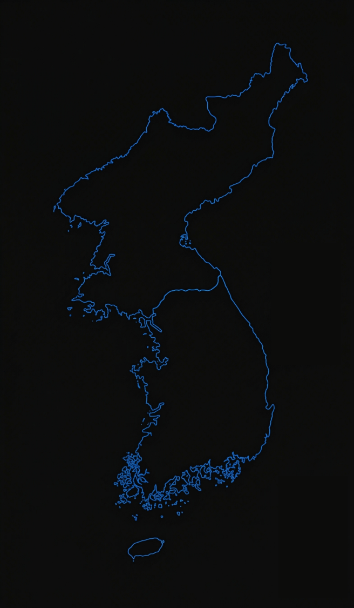
Mission Profile
N₂O/HDPE 하이브리드 로켓의 전형적인 비행 프로파일입니다. 산화제 유량 조절을 통한 추력 제어, 긴급 정지(abort) 기능, 낙하산 기반 동체 회수 시퀀스를 포함합니다. (스크롤하여 진행)
* 스크롤하여 미션 시퀀스 진행 | 도달 직후 능동 자세 제어 및 낙하산 사출로 동체 회수
Why Hybrid?
N₂O/HDPE 하이브리드 추진 체계는 고체와 액체 로켓의 장점을 결합하면서 양쪽의 단점을 최소화한 차세대 추진 방식입니다.
산화제와 연료가 물리적으로 분리되어 자체 폭발이 원천적으로 불가능합니다.
산화제 유량 조절을 통해 실시간 추력 조절 및 긴급 정지(abort)가 가능합니다.
그레인과 인젝터를 현장에서 교체 가능. 계절별 최적화로 연중 운용 보장합니다.
HDPE는 저가 범용 소재. 복잡한 극저온 시스템 불필요로 발사 단가를 혁신합니다.
Core Tech 01
수만 번의 핫파이어 테스트를 가상 공간에서 완벽히 구현합니다. 복잡한 물리현상을 모델링하고, 다중 파라미터를 병렬 연산하여 고객의 페이로드와 목표 고도에 최적화된 맞춤형 엔진 스펙을 수 시간 내에 설계합니다.
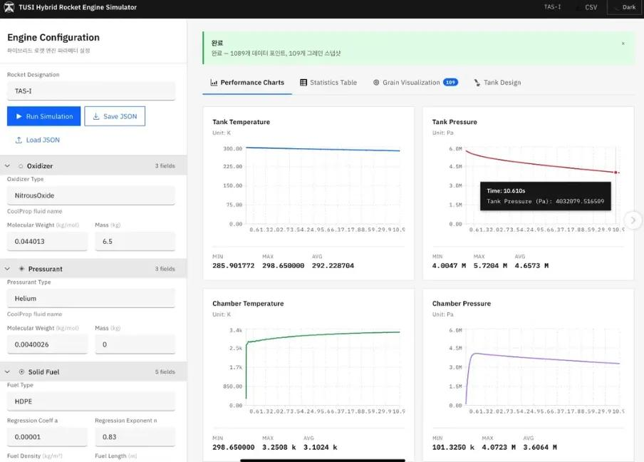
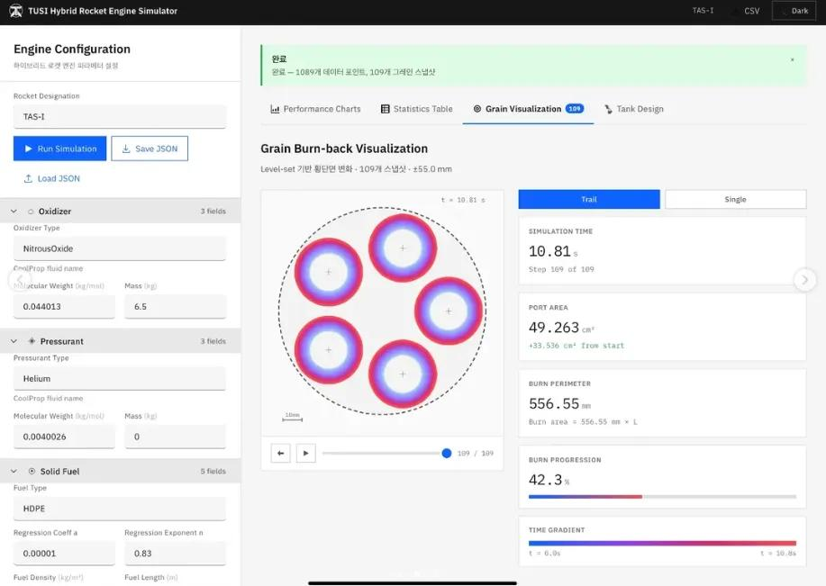
직관적인 웹 UI를 통해 수십 개의 JSON 파라미터(산화제 유량, 인젝터 형상 등)를 한 번에 입력하고, 서버에서 병렬로 해석하여 최적의 엔진 스펙을 즉시 도출합니다.
엔진 연소 시 산화제(N₂O)가 배출되며 탱크 내 압력과 온도가 급감하는 블로우다운 현상을 정밀하게 모사합니다. 또한 헬륨(He) 등 가압제를 활용한 슈퍼차징을 모델링하여 비행 내내 일정한 추력을 유지하기 위한 최적의 가압 조건을 도출합니다.
비균질 비평형(Non-Homogeneous Non-Equilibrium) 모델을 적용하여, 인젝터를 통과하는 액체와 기체 혼합물의 복잡한 유체 역학을 해석합니다. 압력 강하에 따른 N₂O 특유의 상변화(캐비테이션)와 유량 역전 현상을 정확히 예측합니다.
시간이 지남에 따라 변하는 고체 연료(HDPE)의 내부 형상을 레벨셋(Level-set) 기법으로 추적합니다. 실시간 연소 면적 변화를 계산하고, CoolProp 및 NASA CEA 알고리즘과 연동하여 화학적 열역학 특성을 정확히 산출합니다.
TAS-I 시뮬레이션 예측값과 N₂O/HDPE 500N급 연소시험 실측 데이터(0.05~2.2s 구간)를 비교 분석하여 신뢰성을 확보했습니다.
Core Tech 02
소프트웨어를 넘어선 하드웨어 제조 역량. 연소시간 12초 정적 연소시험용 1kN 엔진 CAD 설계를 완료했으며, 비행 제어 및 회수 시스템을 자체 제작했습니다.
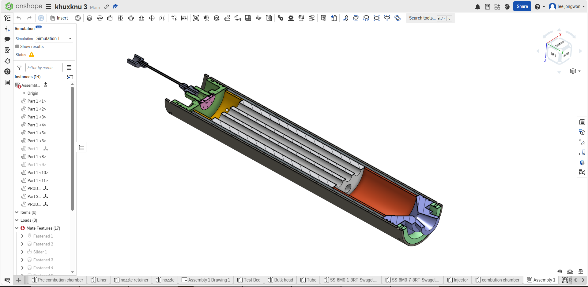
Simulation-Based Research
TAS-I 시뮬레이터를 통해 총 882+ 케이스의 파라메트릭 해석을 수행하여, 온도별 슈퍼차징 보상 전략과 모듈형 하드웨어 교체 가이드라인을 정량적으로 도출하였습니다. 이는 단순 설계 도구를 넘어 실제 운용 의사결정을 지원하는 수준의 시뮬레이션 역량을 보유하고 있음을 의미합니다.
882 케이스 · 2-스케일 파라메트릭 해석 인터랙티브 대시보드
42 튜닝 케이스 + 56 CSV 기반 6개 실험군 교차 분석 — 인터랙티브 대시보드
N₂ 슈퍼차징만으로는 저온에서 구조 압력 한계(7.20 MPa)로 인해 베이스라인 성능의 완전 회복이 물리적으로 불가능합니다. TUSI는 하이브리드 로켓의 구조적 장점—연료 그레인과 인젝터의 현장 교체 용이성—을 활용하여 계절별 하드웨어 스왑 전략을 도출합니다.
핵심 설계 전략: "목으로 압력을, 포트로 O/F를, 충진율로 임펄스를, N₂로 보정을" — 각 설계 변수가 지배하는 성능 지표가 분리되어 있어 분할 최적화가 가장 실용적입니다.
본 시뮬레이션 연구를 통해, TUSI는 단순한 엔진 설계를 넘어 온도·계절별 운용 가이드라인을 정량적으로 도출할 수 있는 역량을 보유하고 있습니다. 히팅/쿨링 장비 없이 인젝터 플레이트와 연료 그레인의 현장 교체만으로 연중 안정적인 발사가 가능한 모듈형 운용 프레임워크가 확립되었으며, 이 접근법은 발사 단가를 획기적으로 절감하는 핵심 경쟁력입니다. 향후 핫파이어 실험(3온도×3조건, 최소 9회)을 통해 비등온 보정 인자 및 ΔP/P 예측 정확도를 검증할 계획입니다.
Future Strategy
엔진 검증 및 데이터 축적 기반을 확보한 이후, 페이로드 발사 서비스를 시작으로 데이터 분석, 설계 용역, 친환경 미션, 교육 사업으로 단계적으로 확장합니다.
주요 메인 캐시카우. 스타트업의 우주 부품 환경 검증, 대학 연구소의 미소중력 실험을 위한 단독 및 쉐어드 페이로드 발사.
궤적, 가속도, 진동 등 극한 환경의 정밀 텔레메트리 데이터를 인증 리포트화 및 자체 시뮬레이터 연계 맞춤형 엔진 설계 용역(B2B).
접근 불가 지역 산림 복원을 위한 고고도 드롭 시딩 기술 접목 및 국지적 기상 조절(인공강우 등) 모듈 발사 실험 지원.
카르만 라인 뷰 온보드 캠 영상의 상업적 미디어 라이센싱 및 400m급 저고도 교육용 사운딩 로켓 캠프 운영으로 대중화 기여.
Execution Roadmap
설계 검증과 데이터 축적을 우선 목표로, 단계적으로 엔진 성능을 확보합니다.
연소 챔버 상세 설계 및 인젝터 형상 최적화
열·압력 하중 조건에 대한 유한요소 구조 해석 수행
시제품 제작 및 기밀성·내압 검증
메인 엔진 밸브, 산화제 공급계 설계. Cantera 연동 1D 흐름 해석 모델 구축
동체 및 에비오닉스 성능 검증을 위한 실제 비행 시험
산화제 공급 라인 부품 조달 및 조립
1kN급 엔진 최초 연소시험. 추력·압력 프로파일과 해석 모델 교차 검증
반복 시험 데이터 축적 및 시스템 통합 비행 검증
Our Heritage
TUSI는 1994년 창립 이래 30년간 로켓 연구를 지속해 왔습니다. 고체 모터 제작부터 에비오닉스, 지상국, 실제 비행 시험까지 발사체 체계 종합의 전 과정을 독자적으로 완수한 기술 이력을 보유하고 있습니다.
500N급 고체 로켓 모터를 독자적으로 설계 및 제작하여 성공적인 연소 시험을 수행했습니다. 특히, 엔진의 성능을 정확히 측정하기 위해 추력 측정 시스템(TMS)을 자체 구축했습니다.
비행 제어 컴퓨터를 자체 설계한 PCB 기반으로 제작. 6축 IMU, 기압 고도계, GPS 등을 실시간 센서 퓨전으로 처리합니다. 정확한 정점(Apogee) 감지를 통한 낙하산 사출 제어를 구현했습니다.
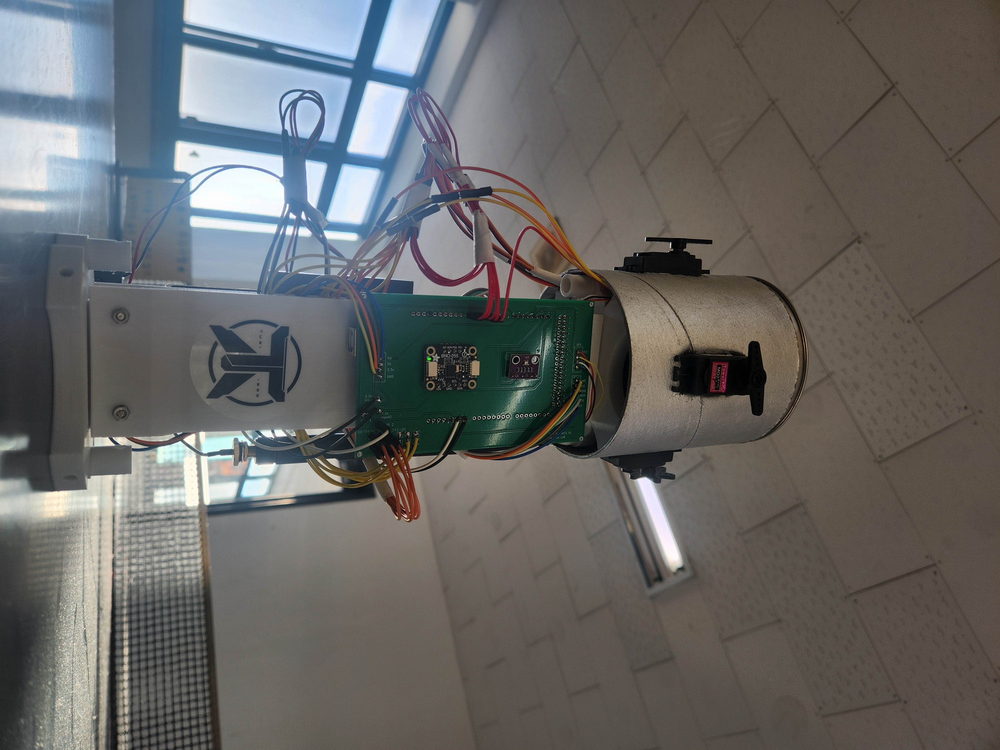
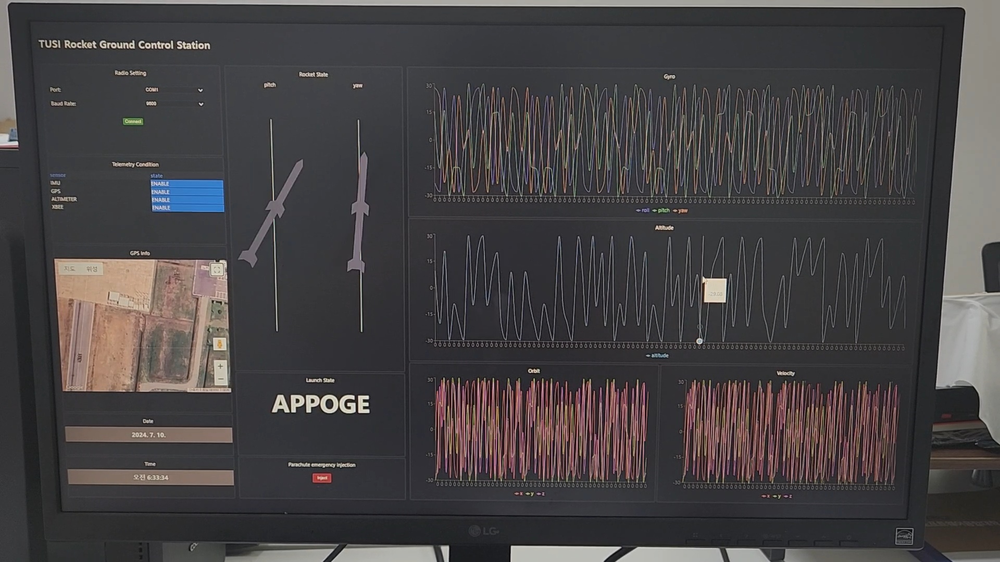
비행 중인 발사체와 양방향으로 소통하는 지상통제소 소프트웨어와 하드웨어 안테나 시스템을 구축했습니다. 텔레메트리를 실시간 시각화하며, 비상 시 원격 커맨드를 전송할 수 있는 무선 통신 인프라를 완성했습니다.
추진체, 구조체, 에비오닉스를 하나의 로켓으로 통합하여 실제 야외 비행 시험을 수행했습니다. 최고점에서 정확히 분리 메커니즘이 작동하여 낙하산을 통해 기체를 파손 없이 회수하는 데 성공했습니다.
연소시험부터 비행 시험까지, TUSI가 걸어온 모든 순간을 담았습니다.
Awards & Achievements
TUSI는 1994년 창립 이래 전국 로켓 대회에서 꾸준히 성과를 거두어 왔습니다.
Activities & Records
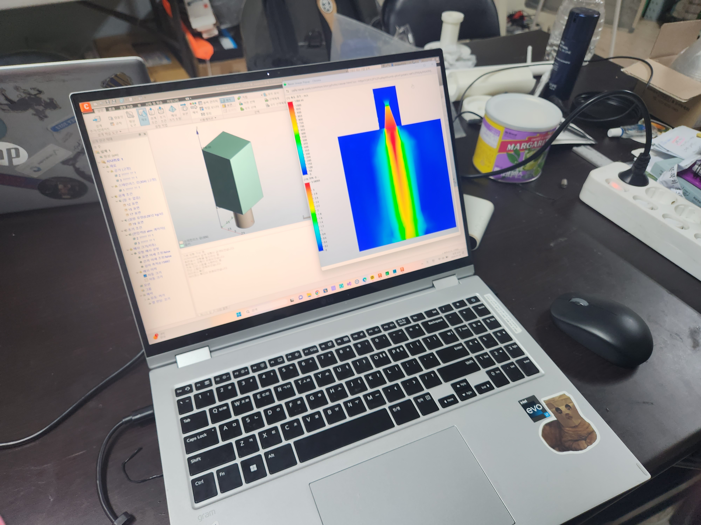
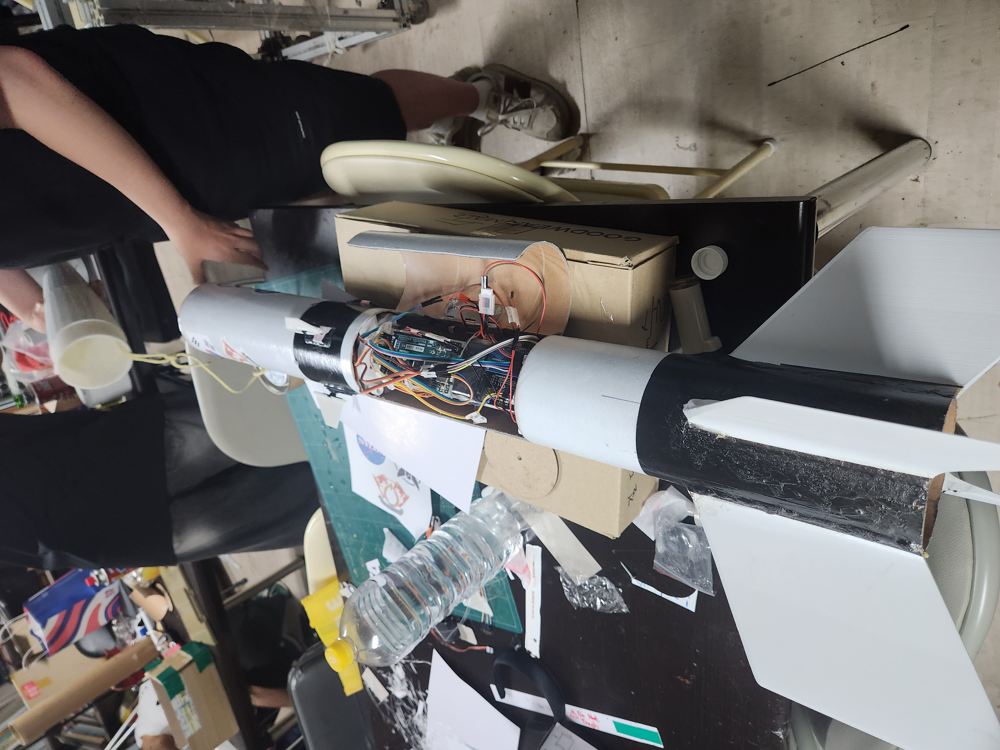
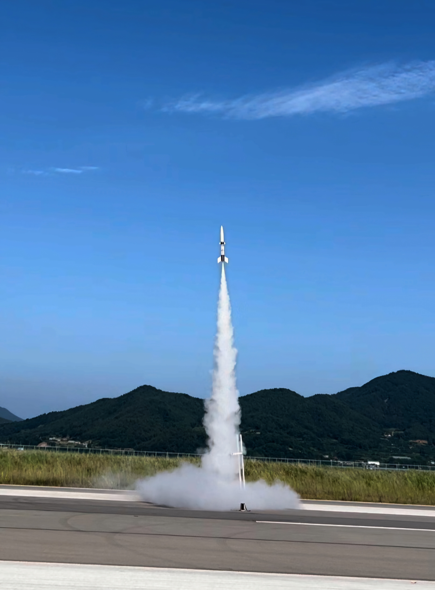
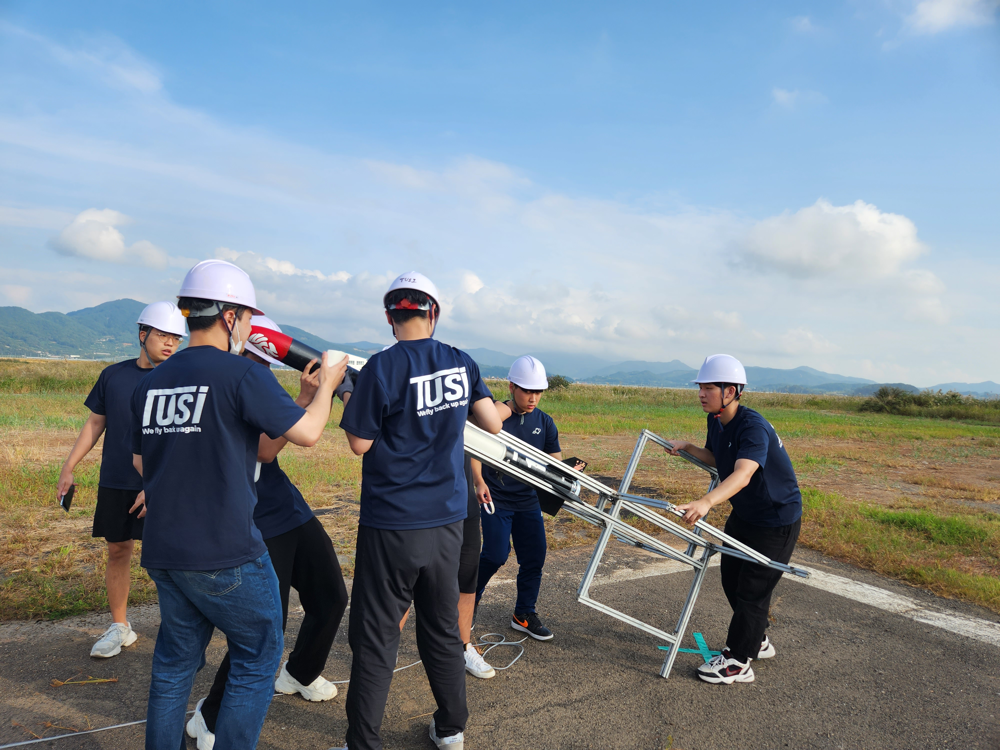
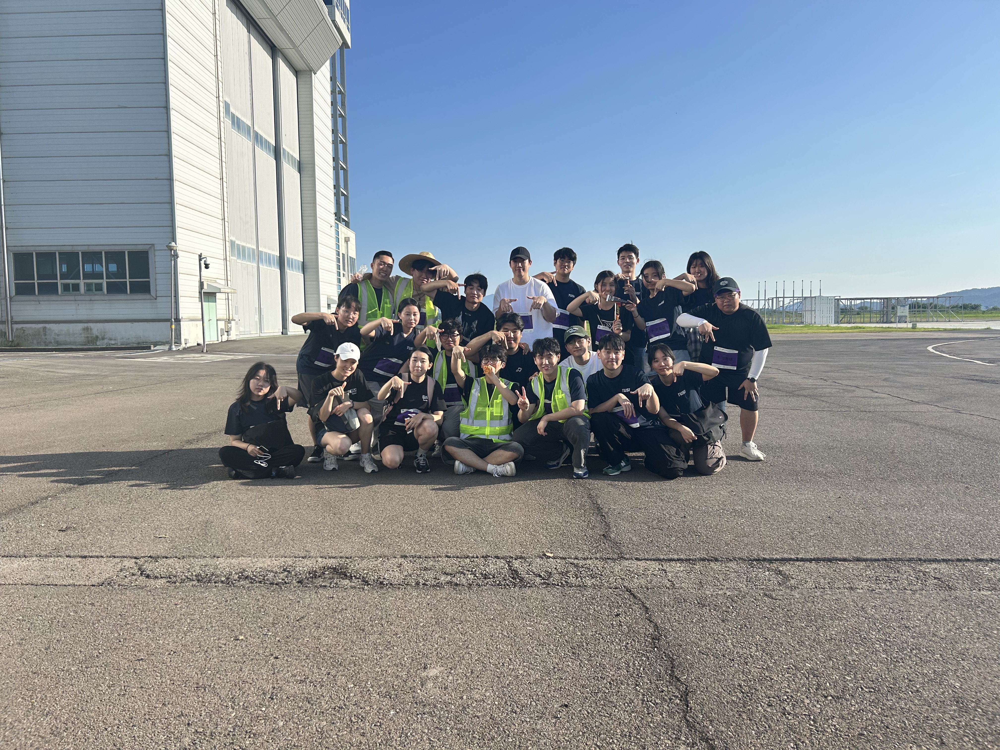
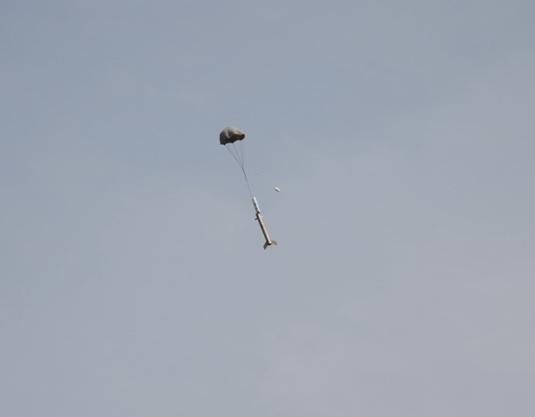
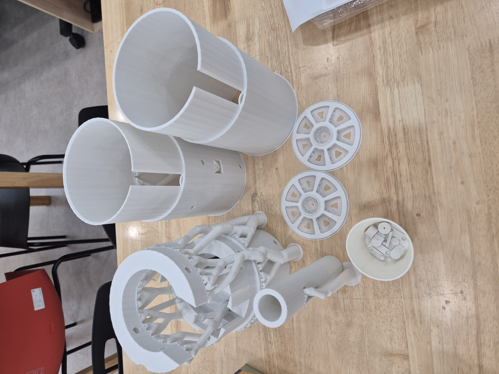
Partners & Collaborators
FAQ
산화제(N₂O)와 연료(HDPE)가 물리적으로 분리된 상태로 저장되므로, 고체 로켓과 달리 자체 폭발이 원천적으로 불가능합니다. 또한 N₂O는 자체 점화가 불가능하며, 산화제 밸브를 차단하면 즉시 연소가 중단되어 긴급 정지(abort)가 가능합니다.
3~5kN급 엔진 기준으로 수 kg 수준의 페이로드를 100km 고도까지 수송할 수 있습니다. 정확한 탑재 중량은 고객의 목표 고도, 체공 시간 요구사항에 따라 TAS-I 시뮬레이터를 통해 최적화됩니다.
엔진 검증 완료 후 건당 과금 모델로 서비스를 제공할 계획입니다. 페이로드 사양, 목표 고도, 체류 시간 등을 기반으로 시뮬레이터를 통해 최적 미션 프로파일을 설계합니다. 하이브리드 로켓의 구조적 단순함 덕분에 경쟁사 대비 낮은 단가가 가능합니다.
N₂O의 포화 증기압은 온도에 크게 의존하여 최대 54%까지 성능이 변동할 수 있습니다. TUSI는 온도별로 인젝터 오리피스 크기, 연료 그레인 길이, 가압제 양을 사전에 최적화한 모듈형 운용 가이드라인을 확보하고 있어, 연중 어떤 기온에서도 일정한 성능을 보장합니다.